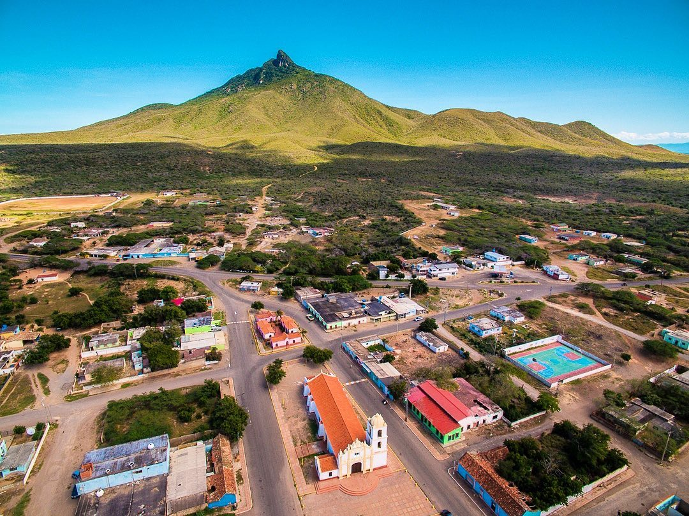
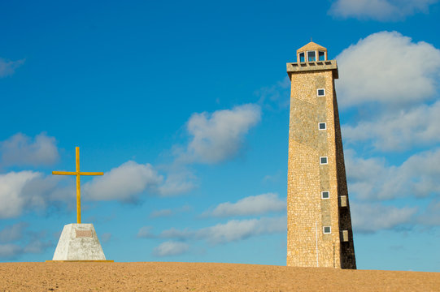
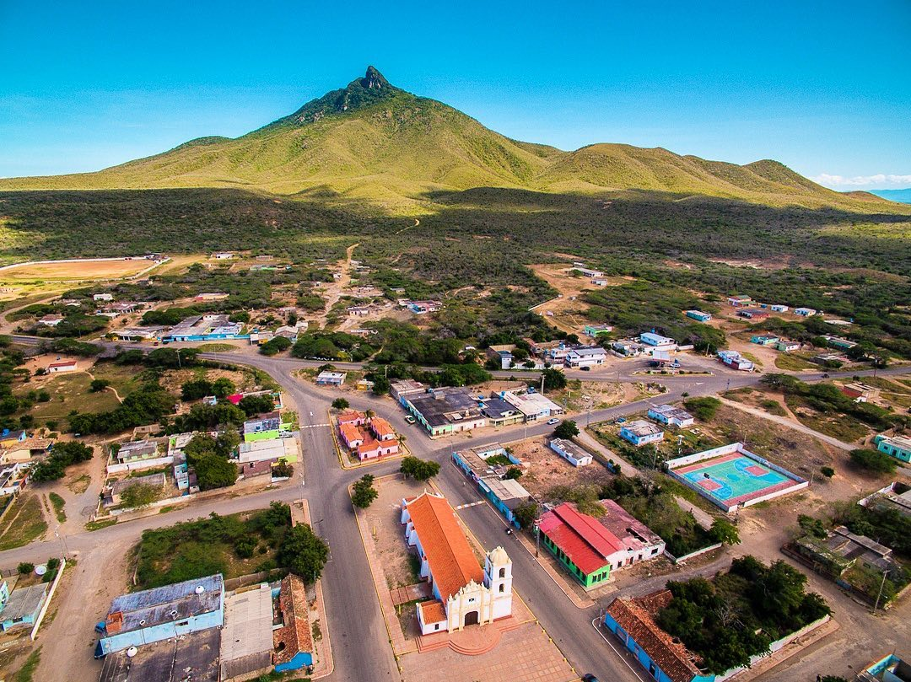
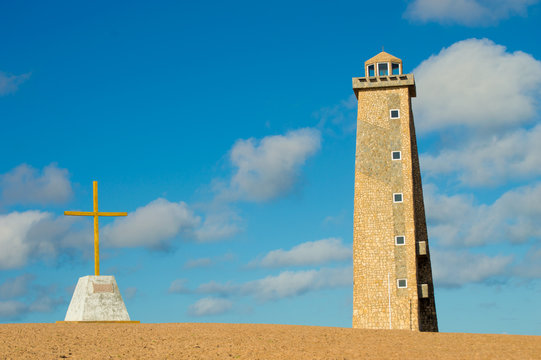

Falcón te invita a descubrir sus maravillas naturales el Parque Nacional Morrocoy, con sus islas y aguas cristalinas las imponentes Cataratas del Hueque, un espectáculo de la naturaleza. El Cerro Santana, desde donde podrás disfrutar de vistas panorámicas increíbles.
Todo esto, rodeado de la belleza única de la península, un paraíso natural que no puedes dejar de explorar.
Recorre sus pueblos mágicos, como Santa Ana de Coro, con su encanto colonial, y Cabo San Román, donde el faro se alza entre paisajes únicos. Adícora, ideal para el windsurf, y los Médanos de Coro, con sus imponentes dunas, completan este viaje lleno de historia y belleza. ¡Ven y descubre la magia de Falcón!
 



"¡Falcón, donde el sol besa las playas más hermosas! Un paraíso que no solo se ve, ¡se vive! Ven y descubre la magia de sus aguas cristalinas... porque estar aquí y no probarlas, ¡es imperdonable!" 🌊☀️
Villa marina
Tiraya
Cayo Sombrero
Mata gorda
Adicora
Boca de Aroa